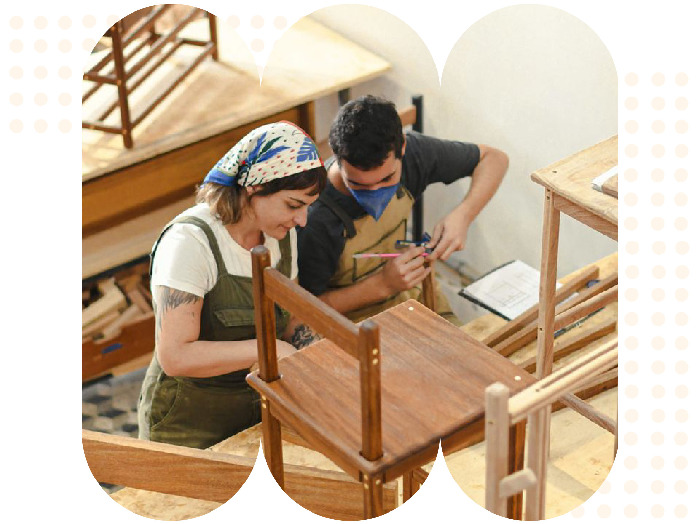
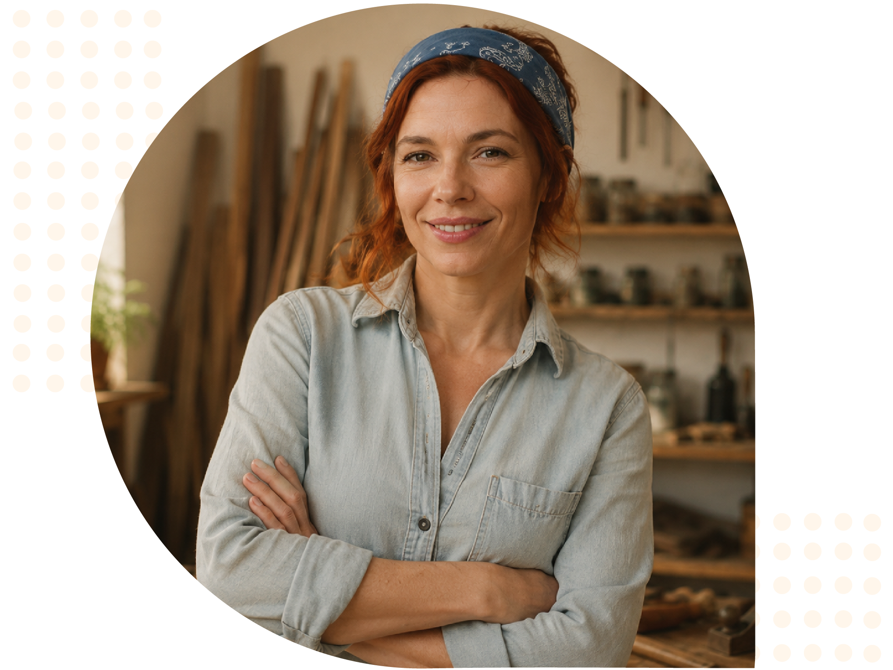
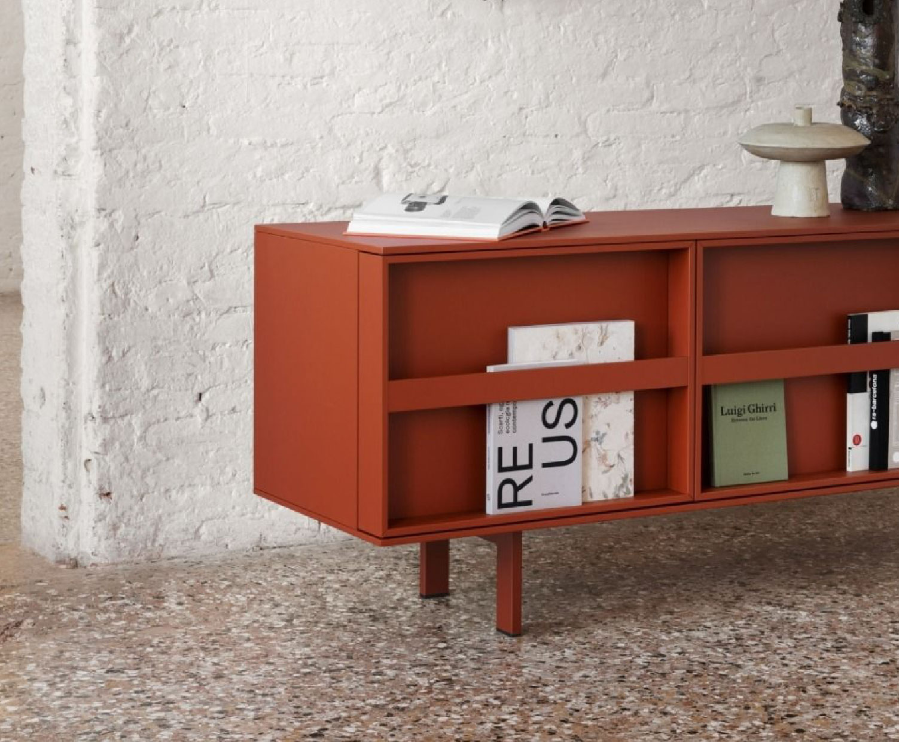
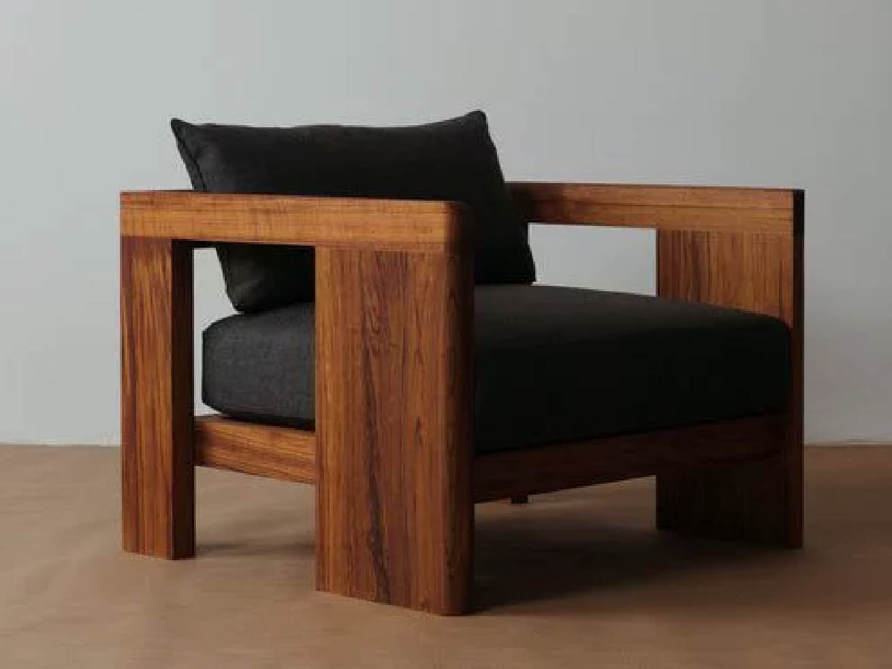
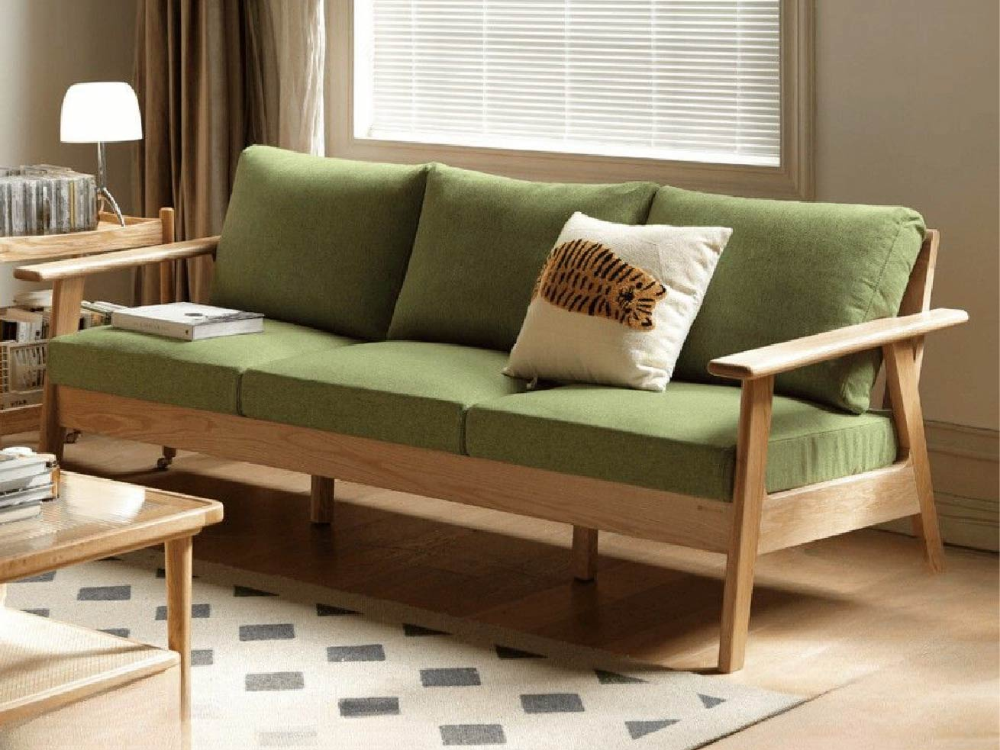
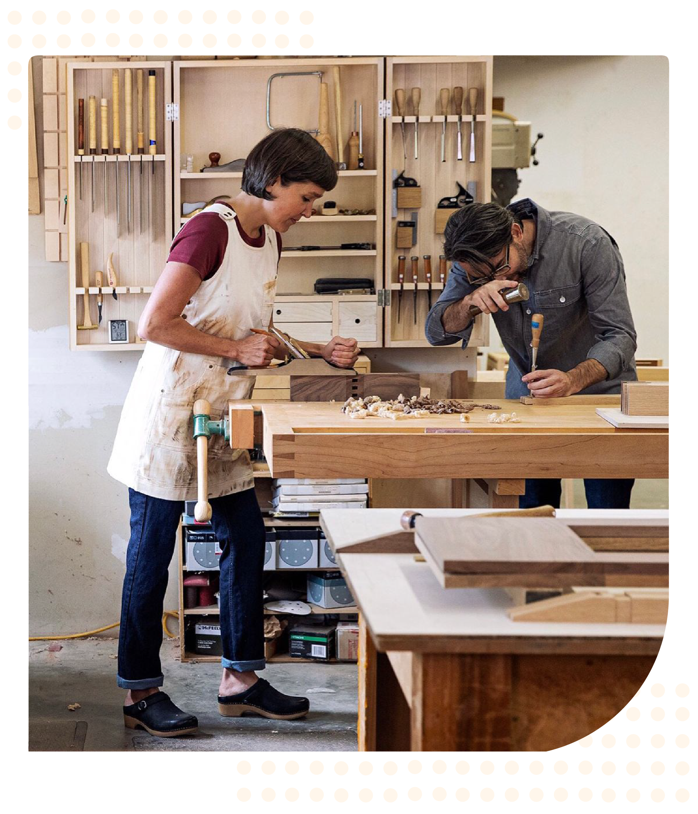

Conocé las herramientas, técnicas y procesos básicos para renovar muebles de madera con resultados que te sorprenderán.

Descubrí el recorrido del curso y las técnicas que te permitirán restaurar muebles de madera paso a paso.

Restauradora y emprendedora que te guiará paso a paso durante el curso.
Lucía te acompaña en cada clase, respondiendo tus dudas y guiándote paso a paso para que ganes confianza en cada técnica.


"Llegué sin experiencia y terminé restaurando una cómoda antigua que tenía guardada mi familia desde hace años. Las clases son claras y el acompañamiento es excelente."María G.

"Lo que más me gustó fue aprender técnicas profesionales que realmente se usan en el oficio. Hoy realizo trabajos por encargo gracias a lo aprendido en el curso."Javier R.


"Las explicaciones paso a paso y las prácticas me dieron mucha confianza. Recomiendo el curso a cualquiera que quiera iniciarse en la restauración."Lucía M.

El curso es 100% online y está compuesto por clases grabadas que podés ver a tu ritmo, desde cualquier dispositivo y en el momento que te resulte más cómodo.
No. El curso está diseñado tanto para principiantes como para personas con conocimientos previos que quieran perfeccionar sus técnicas de restauración.
Al comenzar el curso recibirás una lista detallada de materiales y herramientas recomendadas. Muchas de las prácticas pueden realizarse con elementos básicos y de fácil acceso.
Sí. Al completar todas las lecciones y actividades del curso recibirás un certificado digital que acredita tu participación y los conocimientos adquiridos.
Aprenderás a evaluar el estado de un mueble, reparar daños, preparar superficies, aplicar técnicas de restauración, pintura y acabados para devolverle vida a piezas de madera.
Sí. A lo largo del curso trabajarás sobre ejemplos y proyectos reales para poner en práctica cada técnica y ganar confianza en el proceso de restauración.
Inscribite hoy y comenzá tu camino en la restauración de muebles.